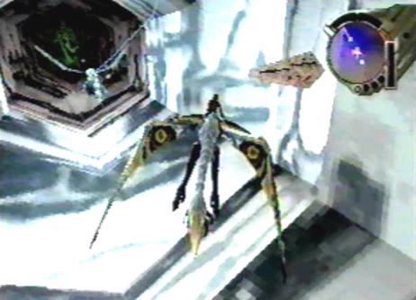

Diary Entry 23: Georgius Visit 2 Dragon Spirit Searching the area surrounding the ancient ship at Georgius, we found four identical pyramids. When activated, spheres of energy poured out of them and into the back of the ship. When the fourth pyramid was destroyed, the energy spheres that poured out of it pulled us towards the ship. It was evident that we were near the ships entrance, so we entered its depths to explore further. Inside the vast corridor within, we flew past a giant door. As we entered into the next section, three streams of blinding light rushed forward manifesting into a dragon, right in front of our eyes! It seemed the dragon spirit wanted us to follow it, so we did just that! The corridor seemed to stretch on for an eternity. The ghostly dragon disappeared behind a final green door. When we opened this door, we were drawn into a portal of green light. It was amazing! When we emerged, we found ourselves in a large chamber. Within this chamber was a giant dragon crest. The spirit of the dragon we followed, was nowhere to be found. My dragon accessed the dragon crest, turned it into pure energy, and drew it into its body for storage. Upon doing so, a strange creature emerged from the crest. I had no idea what it was! To me, it looked as if it was the spirit of that dragon, reincarnated into a baby dragon pup. But it's just my crazy theory. The little guy immediately took a liking to my dragon, and it flew beside us willingly. It wouldn't leave our side. Astoundingly, it mimicked my dragon's moves, and pulled off a few tricks of its own! We left the chamber and headed back down the long corridor, returning outside. It was time to put this ancient ship to rest. Located on the side of the ship, were its engine rudders. We proceeded to destroy them, one by one. The dragon's lasers made quick work of them. After they fell apart into the water below, a long stream of energy from inside the ship, reached out and grabbed us! We had no way of freeing ourselves, we were within its grasp! We were then dragged to the back of the ship, where even more energy streams latched on to my dragon. The energy streams flung us around violently! The ship was making one final attempt to stop us from bringing forth its downfall. The dragon, with great effort, managed to break down the beams one after the other, until their grip weakened and they were no more. Once all of its defensive beams were destroyed, the ship self-destructed. It fell to its final resting place, below the shadowy water. The ship was gone, and a new ally was gained. I wondered how this little guy, could be of any help to us, but I guess, he was trying it's best. The three of us rested up at camp. The next day, we made way for the Imperial Air Force Base, to show the Empire we didn't take the complete obliteration of Zoah and its people, lightly! |
|
| Divine
Overview |
|
1. Now that you have acquired laser rank level 4 you should have no problem activating the four pyramids, found throughout Georgius. After you destroy a pyramid, energy spheres will enter the back of the ship. The spheres are unlocking doors within Shellcoof. Once all four pyramids are destroyed, the spheres pull you towards Shellcoof's entrance. It's time to go inside! |
2. Once you pass through the first door inside Shellcoof, three rays of light will shine forward. |
3. The rays of light will then manifest into a dragon. If this certain dragon looks familiar well, it's because it's Lagi from Panzer Dragoon and Panzer Dragoon 2 Zwei! Lagi's spirit has now been freed from the dragon crest, where it had been sleeping. |
| 4. He wants you to follow him, so go right ahead and do so. You will head past many doors, throughout the vast corridor. |
 5. As you near the end of the corridor make sure not to miss the Blast Chip X 1 and Dragoon Booster X 1, that can be found on the left and right walls, just before the last green door. The Dragon Booster has a special ability. When in movement and in the vicinity of multiple item containers or objects, if you perform a roll by pressing R, then immediately press A to activate your lock-on cursor. The dragon will lock-on to all surrounding targets at once. |
| 6. Follow the spirit of Lagi, as he Moves through the last green door. You will be brought through a warp tunnel! |
7. You will arrive inside the Genesis Chamber. Within this chamber, you will find a Dragon Crest, as well as two Ambrosias located to the left and right sides. |
8. Upon accessing the Dragon Crest, a strange creature will emerge! This is the dragon pup, or more formally known as Lagi's reincarnation. |
9. The little guy will take a liking to your dragon and fly right along side you. He's your responsibility now, so take good care of him. He may be the key to gaining unimaginable power later on! |
10. Don't take him for granted, just like your dragon, he can do some tricks as well. First, when your dragon is stationary, hold L or R and press left or right on the D-pad or analog stick to perform a hard turn. The little guy will then spin around in a circle. Quite playful, isn't he!? |
| 11. Second, while moving your dragon, press R to do a barrel roll. The dragon pup will then mimic the dragon's movements and pull off a barrel roll of his own. Not too shabby. |
| 12. Leave the Genesis Chamber and continue back down the long corridor. |
13. And for the dragon pup's final trick, he will perform a forward flip for your amusement, whenever your dragon fires a laser, as shown above. |
|
14. Okay, back to the task at hand. It's now time for you to put the ancient ship Shellcoof to rest. Fire upon its engine rudders, with all of your heart and soul! |
15. Once you destroy all of the engine rudders, Shellcoof will make one last attempt to stop you from bringing forth its destruction. Arrows of divine light will grab hold of you! Fire at the back of the ship (the start of each beam of light). Doing so will cause each one to gradually breakdown. |
| 16. When all of the beams have been broken down, the ship will self-destruct. It will now rest in eternal slumber. In pieces, that is! |
17. The dragon pup will now take shelter along with you and your dragon, at camp. He snores in his sleep, by the way! |
18. The dragon pup actually has one other trick up his sleeve. If you return to previous areas, like the Above Excavation Site the little guy will fly off on his own, returning with useful items. Although, you aren't able to do this just yet. You must first gain his trust! |
|
19. Now, head off to the Imperial Air Force Base to show the Empire you didn't take the complete obliteration of Zoah, lightly! |